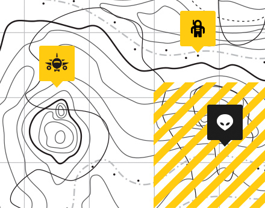

Не забудьте взять с собой:
- Паспорт. Визовый режим пока не введен, но на границе будет досмотр.
- Тяжелые ботинки. Пригодятся вам в условиях низкой гравитации на Луне.
- Криптовалюта. Рекомендуем заранее обменять немного Лун-коинов, чтобы купить сувениры.
Надоело летать в отпуск за границу? Как на счет того, чтобы слетать на Луну?
Устали от пакетных туров и пляжного отдыха? Полотенца и магнитики, которые вы привозите из отпуска уже не радуют ваших близких? В следующий раз привезите им настоящий лунный камень!
Мы предлагаем инновационную услугу на туристическом рынке - космический туризм (пока только на Луну, сейчас решаем вопрос с взоимным центром Венеры).
Берите отпуск и отправляйтесь с нами в полёт он займёт всего 72 часа!
Это лучше оставить дома:
- Телефон. В космосе не ловит ваш любимый оператор и нет Wi-Fi.
- Бутерброды. На борту будет питание, которое не разлетится по кабине в условиях невесомости.
- Плавки/купальник. Море Ясности и Океан Бурь это большие кратеры. Без воды.